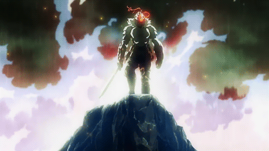
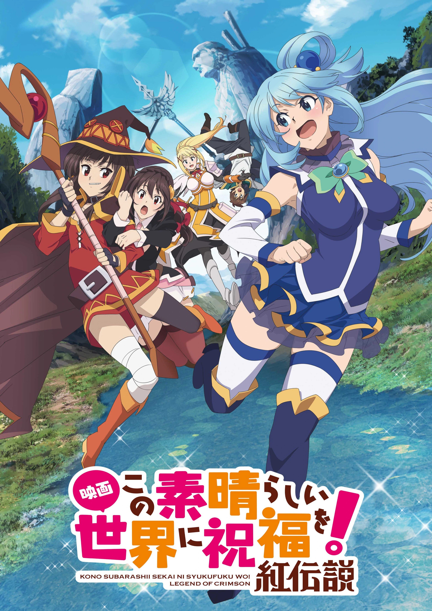
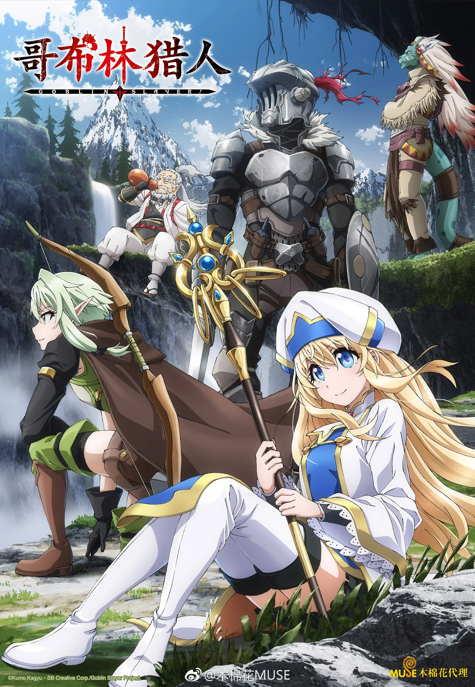
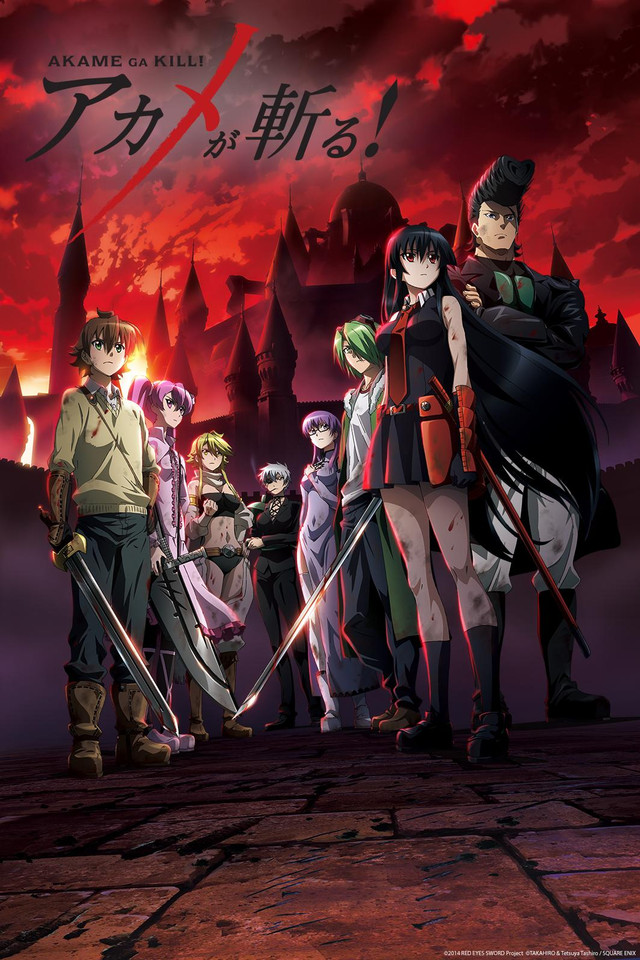

What Is An Adventure-Based Anime?
The adventure genre in anime is about travelling and adventuring to certain places or around the world. In most adventure-based animes, the protagonist travels with a group of allies or freinds. These characters accept challenging jobs and are often rewarded for their hard work. They are willing to venture into certain places in search for treasure, exploration, defeating an enemy, or saving the world. Although the journey is difficult, the viewer learns a lot about these characters and their background. In most situations, episodes are stretched so that the viewer can experience the journey with the characters in the anime. The adventure genre contains a lot of exploration, humor, character bonding, risk and reward, immersion, and more. Here are a few examples of adventure-based animes.
KonoSuba: God's Blessing on this Wonderful World!
Konosuba begins with Kazuma Satou, a high school student, who out of nowhere, dies on an average day on his way to school. After getting hit by a vehicle, Satou reawakens in the afterlife, where he meets a sassy girl named Aqua. She claims to be a goddess who guides people that have died at a young age. Claiming to be a goddess who guides younglins, Aqua tells Satou his options: go to heaven or enter a world where he needs to defeat the Demon King. Satou accepts the challenge and is then transferred into a real-life RPG world. Before going to this world, he is granted one wish. Surprisingly, he chooses Aqua! Throughout his journey world, Satou is in for a challenge. Things do not appear to be easy as he faces many enemies and obstacles. Satou realizes that this is not a game but this does not stop him from having fun. Will Satou and his team defeat the Demon King? IMDb rated the anime a 7.8/10 and it aired in 2016.
Goblin Slayer
This anime involves gruesome scenes mainly because there are creatures named "Goblins". These creatures are known for their sinister behavior, cunning skills, and rapid reproduction. Due to these traits, people hate Golbins and are seen as a threat. Many of them like to destroy villages and kidnap females for selfish reasons such as breeding. To help with this problem, a 15-year-old Priestess joins a group of rookies. The Priestess' freinds die and is the only survior. She is saved by a mysterious man called "Goblin Slayer". Goblin Slayer is of the top rank in the Adventurer's Guild. How did he earn his rank? Well, the only thing he does is kill goblins! Majority of the Adventurer's Guild hate him because he only knows how to kill goblins. Golbin Slayer eventually teams up with the Priestess, a High Elf, Dwarf, and Lizard, to defeat the horde of goblins. IMDb rated the anime a 7.5/10 and it aired in 2018.
Akame ga Kill!
Akame ga kill is about a covert assassination branch of the Revolutionary Army known as "Night Raid". This branch's purpose is to overthrow Prime Minister Honest, who manipulates the child emperor's inexperience because of his young age. The nation is in demand of a reasonable leader since poverty and corruption overflows the nation. Night Raid understands that killing people is unlawful but at the same time justify their actions because things are getting out of control. The protagonist is Tatsumi, who joins Night Raid to reform society. Tatsumi trains with the most powerful assassins while questioning their actions throughout the process. What does it mean to be an assassin? Each assassin of Night Raid owns a powerful weapon that proves to shift the tide of the battle. Will Tatsumi stay in this group of assassins? Is it right to take matters into your own hands? IMDb rated the anime a 7.9/10 and it aired in 2014.
One Piece
 One Piece! Oh boy, this anime is still going and is currently on episode 971! One Piece begins with some historical background. As it turns out, Gol D. Roger, also known as the "Pirate King," was captured and killed by the World Government. Before being caught and killed by the World Government, Roger's last dying words mentioned something about the greatest treasure in the world, One Piece. This gives rise to the Grand Age of Pirates, pirates who seek the One Piece treasure. One of these pirates is Monkey D. Luffy, a 17-year-old boy. Luffy, is not your stereotypical pirate. He does not have one foot, eye-patch, nor raids villages for gold! Aside from joining the hunt to find the One Piece treasure, he also does it for the thrill of the adventure. Will Luffy and his crew find the treasure? Will someone else beat them to it? IMDb rated the anime a 8.8/10 and it aired in 1999.
One Piece! Oh boy, this anime is still going and is currently on episode 971! One Piece begins with some historical background. As it turns out, Gol D. Roger, also known as the "Pirate King," was captured and killed by the World Government. Before being caught and killed by the World Government, Roger's last dying words mentioned something about the greatest treasure in the world, One Piece. This gives rise to the Grand Age of Pirates, pirates who seek the One Piece treasure. One of these pirates is Monkey D. Luffy, a 17-year-old boy. Luffy, is not your stereotypical pirate. He does not have one foot, eye-patch, nor raids villages for gold! Aside from joining the hunt to find the One Piece treasure, he also does it for the thrill of the adventure. Will Luffy and his crew find the treasure? Will someone else beat them to it? IMDb rated the anime a 8.8/10 and it aired in 1999.